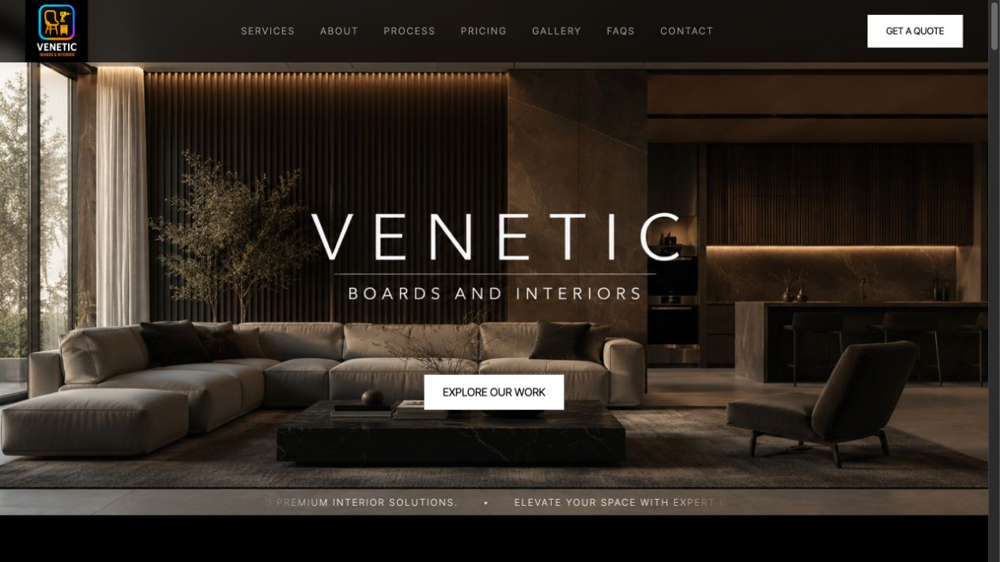
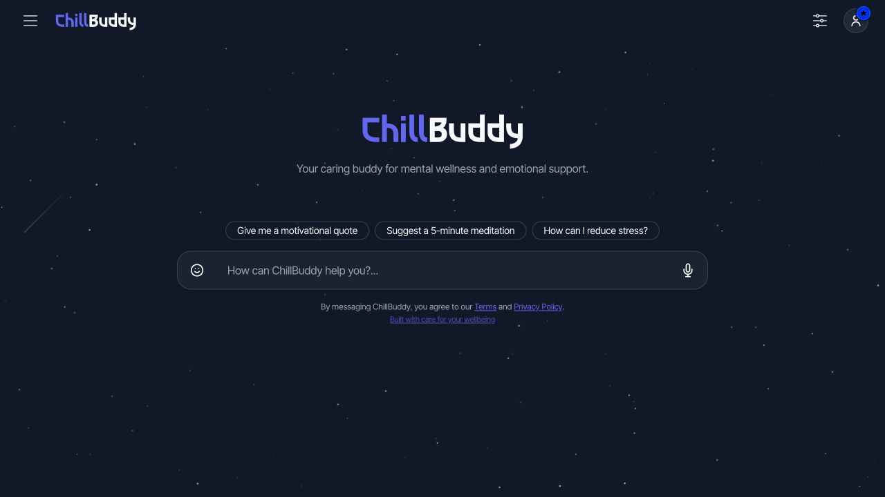
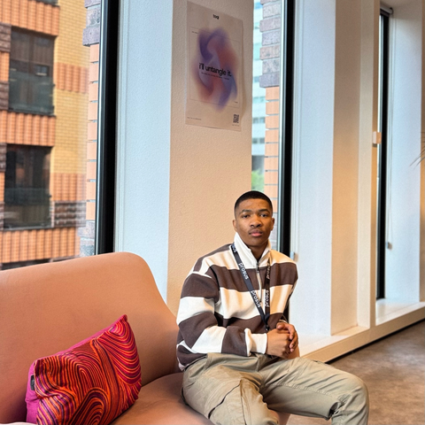
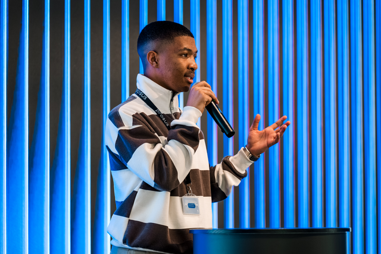

JAVASCRIPT · WEATHER APIS · RESPONSIVE UI
South African skies.
One clear forecast.
Real-time weather for cities across South Africa, with forecasts and interactive weather layers.
CURIOUS. BUILDING. ALWAYS LEARNING.
BASED IN SOUTH AFRICA ↗
Hey, I’m Iviwe Booi
Software engineer. AI explorer. A curious mind turning complex problems into simple, useful experiences.
01 / SELECTED WORK
A few things I’ve built.
Each one, a new problem worth solving.
JAVASCRIPT · WEATHER APIS · RESPONSIVE UI
Real-time weather for cities across South Africa, with forecasts and interactive weather layers.
WEB APPLICATION · DOCUMENT TOOLS
A free PDF merger created by a student, for students. Bring your documents together without the extra friction.
REACT · VITE · CONTENT ANALYSIS
An exploration of AI content analysis, with document uploads, highlighted passages, and downloadable reports.

HTML · CSS · JAVASCRIPT · LEAFLET
A local business, a clearer digital presence. Built with Mnelisi M., with service information, project galleries, quote requests, and search-friendly structure.

PYTHON · FLASK · HUGGING FACE
An AI companion prototype built at the South African Intervarsity Hackathon 2025, exploring mood tracking, supportive conversations, and useful resources.
02 / THE PERSON BEHIND THE CODE

IVIWE BOOI ↗CURIOUSI’m Iviwe — a Software Engineer AI Graduate at Takealot Group, a UCT Computer Science graduate, and someone who likes figuring things out.
I enjoy the whole journey: understanding a problem, shaping an interface, and building the logic that makes it work. My projects are where curiosity becomes something you can actually use.
From engineering practices at impact.com to the Prosus AI Accelerator in Amsterdam, I’m learning to look beyond how we build — and ask who we’re building for. That curiosity carries into my projects, collaborations, and tutoring.
03 / EXPERIENCE & PERSPECTIVE

BEYOND THE KEYBOARD
Learning to ask better questions.
And share what I discover.
CURRENT CHAPTER
Takealot Group
Part of the AI Academy Graduate Programme, developing my engineering practice at the intersection of software and AI.
INTERNATIONAL LEARNING · SEPTEMBER
Amsterdam · Representing Takealot
A month learning with teams across the Prosus ecosystem. THNK School of Leadership workshops deepened my focus on people, assumptions, and the problems worth solving.
INDUSTRY EXPERIENCE
impact.com
Hands-on exposure to clean code, code reviews, unit testing, agile ceremonies, and the collaboration behind professional engineering teams.
GIVING BACK · SINCE JUNE 2023
IkamvaYouth · Volunteering
Supporting learners in small groups, helping them understand their schoolwork and build confidence.
Computer Science · 2022–2025
Data structures, algorithms, databases, concurrent programming, computer networks, operating systems, and software development.
African Research Society · Biological databases and collaborative problem-solving. A molecular genetics project explored sucrose-fermenting bacteria in soil.
Languages: English & isiXhosa
04 / TOOLS OF THE TRADE
From the first interaction to the logic
behind it, I enjoy connecting the pieces.
05 / CONTINUOUS LEARNING
Engineering foundations. AI curiosity.
A growing understanding of products and people.
FNB App Academy / IT varsity
View certificate ↗LinkedIn Learning
View certificate ↗LinkedIn Learning
View certificate ↗LinkedIn Learning
View certificate ↗LinkedIn Learning Community
Listed on LinkedIn ↗impact.com
Listed on LinkedIn ↗impact.com
Listed on LinkedIn ↗impact.com
Listed on LinkedIn ↗impact.com
Listed on LinkedIn ↗impact.com
Listed on LinkedIn ↗impact.com
Listed on LinkedIn ↗impact.com
Listed on LinkedIn ↗impact.com
Listed on LinkedIn ↗impact.com
Listed on LinkedIn ↗Showing 14 certificates
Beyond certificates · Intervarsity Hackathon participation and collaborative learning with the African Research Society.
06 / HOW I THINK
Understand the people, the problem, and what a useful solution should do.
Turn the idea into a working experience with clear interfaces and thoughtful code.
Test the details, listen to feedback, and keep improving what matters.
07 / A FEW MOMENTS IN BETWEEN
LET’S MAKE SOMETHING THAT MATTERS
Have a project in mind, an opportunity,
or just something interesting to share?